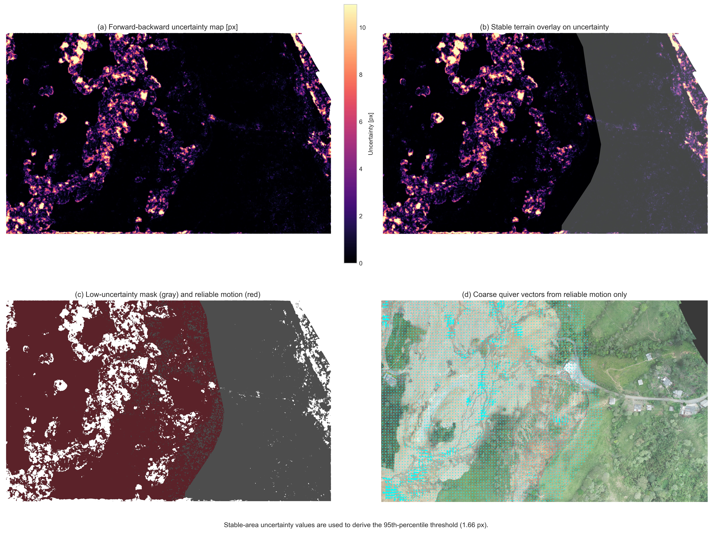
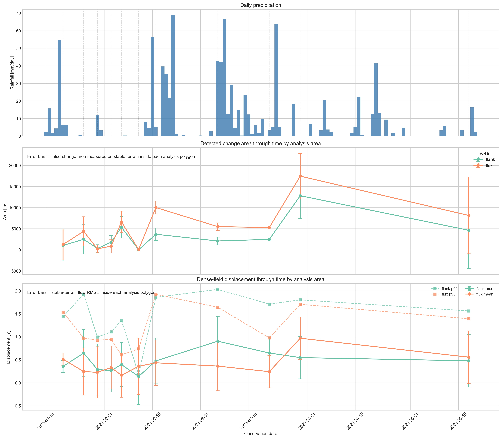
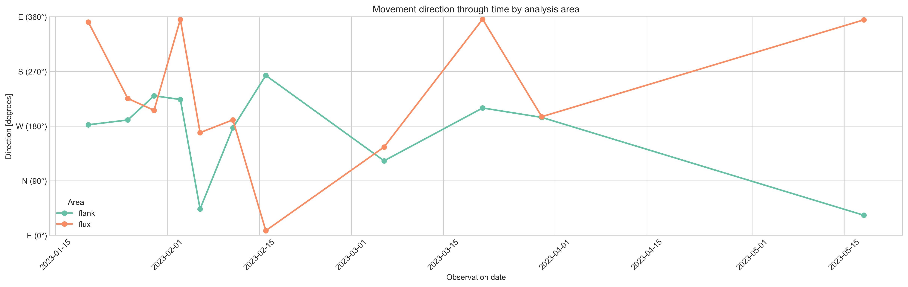
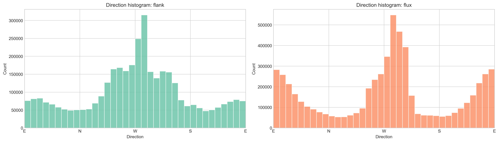

.
1. Introduction
Landslides are among the most destructive geomorphic hazards in mountainous regions, where steep slopes, intense rainfall, and weak or highly weathered materials interact to produce rapid landscape change. In this context, unmanned aerial vehicle (UAV) photogrammetry has become a valuable tool for landslide monitoring because it allows the generation of high-resolution multi-temporal orthophotos and surface models at short time intervals. The Rosas landslide in Cauca, Colombia, provides a particularly relevant case study: the main failure occurred on 9 January 2023 in the upper basin of Chontaduro Creek, affected several local communities, and damaged a section of the Pan-American Highway. Subsequent surveys recorded a rapid expansion of the affected area during the days following the event.
Although multi-temporal UAV products provide very detailed information, comparing images from different dates is not straightforward. Small geometric mismatches, radiometric differences, and local artifacts may be misinterpreted as terrain change, especially in large and complex landslides. In Rosas, different sectors of the landslide exhibit contrasting behaviors, including rotational movement near the crown, translational motion along the flanks, and more flow-like behavior toward the lower part of the mass movement. These differences make the site suitable for testing computer-vision-based methods under distinct deformation conditions.
This study uses 12 orthophotos derived from aligned drone point clouds to evaluate two image-based products implemented with OpenCV: a binary change mask and a dense displacement field. Two contiguous analysis areas were selected to compare algorithm performance under contrasting kinematic conditions. The first area corresponds to a rapidly evolving debris-flow-like sector, whereas the second is located on the eastern flank of the landslide and shows slower, smaller-magnitude deformation that is more consistent with translational movement. By comparing both areas, the study aims to assess how deformation style affects the reliability and sensitivity of each method.
This internship was supervised by Prof. Dr. Bodo Bookhagen.
2. Objectives
2.1. General objective
To evaluate the performance of OpenCV-based change detection and dense displacement estimation on multitemporal UAV orthophotos of the Rosas landslide, comparing their behavior in two contiguous sectors with contrasting deformation styles.
2.2. Specific objectives
- Define two representative analysis areas with different kinematic characteristics: a rapidly changing debris-flow-like sector and a slower eastern-flank sector with predominantly translational behavior.
- Generate, for each consecutive orthophoto pair, a binary change mask and a dense displacement field using OpenCV-based methods.
- Estimate empirical uncertainty from stable terrain in order to quantify false detections and residual motion.
- Compare the temporal and spatial behavior of both products in the two analysis areas and determine how deformation style influences their performance.
3. Study Area
The study area is located in the rural district of La Soledad, municipality of Rosas, Cauca, in southwestern Colombia (Figure 1). It lies within the upper basin of Chontaduro Creek, in the Patía Valley intermontane depression between the Western and Central Cordilleras of the Colombian Andes. The region is highly susceptible to landslides due to the combination of steep topography, intense rainfall, and soils and deposits derived from volcanic and volcaniclastic materials associated with the Sotará volcanic complex. Previous regional work by the Servicio Geológico Colombiano identified a long history of mass-movement activity in the municipality, highlighting the geomorphic instability of the area.

Figure 1. Shaded relief map of study area, showing major rivers, towns and a multi-temporal landslide inventory
The Rosas landslide triggered in January 2023 is a complex mass movement (Figure 2). Previous descriptions indicate a rotational failure in the crown area, intense deformation and cracking in the central body, translational movement along the flanks, and earth- and debris-flow processes toward the toe, where material is funneled through lower-slope zones. This internal variability is important for the present study because it provides natural conditions for evaluating image-based methods in sectors with clearly different deformation dynamics.

Figure 2. Panoramic view of Rosas landslide
For the purposes of this research, two contiguous sub-areas were selected from the orthophotos (Figure 3). The first corresponds to the more active and rapidly changing part of the landslide, where deformation is stronger and more diffuse, resembling debris-flow behavior. The second, is located on the eastern margin of the landslide and exhibits smaller, slower, and more spatially coherent displacements, more consistent with translational motion. The calculated area of the ‘Flow area’ covers approximately 5.83 ha and the ‘Flank area’ about 2.61 ha. The contrast between these two sectors provides the basis for assessing whether the tested algorithms perform equally well in high-activity and low-activity settings.

Figure 3. Sub-areas of study. The flow area (blue shadowed) and the flank of the landslide (purpule shadowed). The stable terrain used to fine-aligned the orthophotos is shown in stripped diagonal lines.
4. Data
The dataset used in this study consists of the 12 orthophotos selected, derived from UAV point clouds acquired after the Rosas, Cauca landslide. These data span from 17 January 2023 to 18 May 2023 and include, for each survey date, the number of cameras, the size of the reconstructed point cloud, and the orthophoto resolution. This subset was chosen assuring all orthophotos cover the area selected for this study.
| Date | Cameras | Points | Orthophoto resolution (m) |
|---|---|---|---|
| 1/17/2023 | 567 | 436,618 | 0.1 |
| 1/20/2023 | 196 | 194,101 | 0.1 |
| 1/26/2023 | 332 | 352,573 | 0.1 |
| 1/30/2023 | 321 | 351,487 | 0.1 |
| 2/3/2023 | 418 | 403.19 | 0.1 |
| 2/6/2023 | 331 | 336,810 | 0.0643 |
| 2/11/2023 | 576 | 627,729 | 0.1 |
| 2/16/2023 | 329 | 346,862 | 0.0631 |
| 3/6/2023 | 330 | 324,661 | 0.1 |
| 3/21/2023 | 331 | 352.909 | 0.1 |
| 3/30/2023 | 328 | 327,605 | 0.1 |
| 5/18/2023 | 333 | 243,261 | 0.1 |
Table 1. UAV-derived orthophoto dataset used in this study for the study area, including acquisition date, number of cameras, point-cloud size, and orthophoto resolution for the surveys selected for the multitemporal analysis..
5. Methodology
The orthophotos analyzed in this study were generated from UAV point clouds that had been previously processed and aligned through a Structure-from-Motion workflow (see the previous study here). This earlier stage included image alignment in Agisoft Metashape, dense point cloud generation, selection of natural control points, GNSS surveying, chunk alignment, and additional refinement through stable-area registration and Iterative Closest Point (ICP) optimization. This previous co-registration stage provided the geometric basis for the orthophoto-based change analysis carried out here.
The methodological workflow developed in this study was designed to compare two computer-vision-based products derived from a multitemporal UAV orthophoto series: a binary change mask and a dense displacement field. The analysis was carried out using 12 orthophotos acquired after the Rosas landslide event, focusing on two contiguous sectors with contrasting deformation styles: a rapidly evolving debris-flow-like sector and a slower, more coherent eastern-flank sector. The workflow was organized into nine sequential stages: (1) image loading, (2) stable-area alignment, (3) common extent definition, (4) radiometric correction, (5) change detection, (6) dense displacement estimation, (7) uncertainty analysis, (8) temporal analysis by area, and (9) precipitation comparison. This general sequence is consistent with the need to first reduce geometric and radiometric inconsistencies before interpreting apparent surface change. The Rosas case and the earlier point-cloud alignment workflow are described on the project page.
Figure 4
5.1. Fine Alignment of Images
Fine image alignment was necessary because even when orthophotos are derived from previously aligned point clouds, small residual offsets between dates may remain. In a landslide study, these residual misalignments can produce false change patterns that are unrelated to true terrain deformation. For this reason, an additional image-based alignment step was applied before any change analysis.
The alignment was performed using only stable terrain rather than the entire image (Figure 3). This decision is essential in an active landslide because the unstable area undergoes real deformation between dates and therefore should not control the geometric transformation. If the full image were used, the matching process could be biased by moving terrain and the alignment would partially absorb real landslide motion into the geometric correction. The stable area was defined based on field observations and geomorphological constrains.
In practical terms, local features were detected within the stable mask using the Scale-Invariant Feature Transform, implemented in OpenCV through the SIFT class. SIFT identifies distinctive image structures and computes descriptors that can be matched between dates (Figure 5). After descriptor matching, a planar transformation was estimated with findHomography, using the RANSAC option to reduce the influence of mismatched correspondences. In OpenCV, findHomography computes a perspective transformation between two planes, while RANSAC retains only geometrically consistent matches as inliers (See OpenCV Documentation).

Figure 5. SIFT Keypoints detected between two images. Circles represent the scale at which the keypoint wast detected and the lines represent the orientation.
After estimating the homography, the target image was warped onto the reference geometry. OpenCV’s geometric transformation routines operate by remapping the pixel grid of one image into the coordinate system of another, which is the basis for the corrected alignment. Alignment quality was evaluated by comparing the absolute grayscale residuals over stable terrain before and after alignment (Figure 6). This check is summarized through the mean absolute error over stable pixels, so that a successful alignment is indicated by a reduction in residual difference after warping (see the notebook). This evaluation is particularly useful because it provides a direct measure of whether the fine alignment step actually improved comparability between dates.

Figure 6. Absolute grayscale difference before and after alignment for a single pair of images.
5.2. Pre-Processing
Once the images were finely aligned, a preprocessing stage was applied to ensure that only comparable pixels were analyzed. First, the valid overlap between the reference and aligned target image was identified, and the analysis was restricted to the common image extent. This step is necessary because small differences in coverage and warping can leave margins where one image contains data and the other does not. The stable mask was also resized when necessary to match the raster dimensions of the images used in each pair. In OpenCV, image resizing can be performed with different interpolation schemes; nearest-neighbor interpolation is appropriate for masks because it preserves discrete classes without introducing mixed values.
After defining the common extent, the target image was radiometrically harmonized with the reference image through histogram matching (reference). The purpose of this step was to reduce differences caused by illumination changes, exposure variability, and acquisition conditions between dates. In multitemporal orthophoto analysis, such radiometric inconsistencies can generate false detections if the comparison is based directly on pixel values. Therefore, histogram matching (reference) was applied before both the binary change detection and dense displacement estimation, so that the measured signal would be more closely related to surface change than to brightness differences (Figure 7).

Figure 7. Pre and post histogram matching of a single image.
5.3. Change Detection
The first analysis product was a binary change mask representing areas where the image content changed substantially between two consecutive dates. The procedure began by converting the orthophotos to grayscale using cv2.cvtColor(See function here), so that the comparison was performed on a single intensity field instead of three color channels. This simplifies the analysis and reduces sensitivity to inter-date chromatic variability, while preserving the luminance structure needed for pixel-wise comparison.
Before differencing, the grayscale images were smoothed with a Gaussian filter using cv2.GaussianBlur(See function here). Gaussian smoothing is used to suppress fine-scale structures and noise without introducing new structures at coarser scales. In practical terms, Gaussian smoothing acts as a low-pass filter: each pixel is replaced by a weighted average of its neighbors, with weights decreasing according to a Gaussian function. This reduces high-frequency texture and small radiometric fluctuations that could otherwise produce unstable or fragmented difference patterns after subtraction (Lindeberg, T. (1994)). In OpenCV, GaussianBlur implements this operation directly by convolving the image with a Gaussian kernel of chosen size and standard deviation.
After smoothing, the absolute grayscale difference between the two dates was computed with cv2.absdiff(See function here). This operation produces a difference image in which each output pixel is the absolute value of the difference between the two corresponding input pixels. Conceptually, this is one of the most classical forms of unsupervised change detection: areas with low absolute difference are interpreted as unchanged, whereas high values indicate a greater probability of meaningful surface modification. Image differencing remains one of the standard pixel-based approaches in remote-sensing change detection because of its simplicity and its direct relation to radiometric change between dates (Hussain, M. et al. (2013)).
The resulting difference image was then thresholded to separate changed from unchanged pixels, using cv2.threshold(See function here). Thresholding converts a continuous-valued difference image into a binary map by assigning pixels above a given cutoff to the “change” class and those below it to the “no-change” class. This step is a binary decision rule applied to the difference distribution, and its performance depends strongly on the selected threshold. Because the grayscale values are in the 0-255 range, a threshold of 30 is a moderate cutoff: high enough to ignore small lighting/texture noise, but low enough to still catch visible terrain changes.
The preliminary binary result was then refined through morphological processing, using cv2.morphologyEx together with a structuring element that can be defined, for example, with cv2.getStructuringElement. This step is grounded in mathematical morphology, where binary objects are analyzed and transformed according to their shape. In this framework, opening is defined as erosion followed by dilation and is useful for removing small isolated foreground patches, while closing is dilation followed by erosion and is useful for filling small holes and improving spatial continuity. Applied to the thresholded difference image, these operators reduce salt-and-pepper noise, connect fragmented changed patches, and produce a more spatially coherent representation of the affected area (see documentation here).
Finnaly, the binary mask was further refined by area filtering, so that very small connected patches interpreted as residual noise were removed from the final result using cv2.findContours. This stage is conceptually important because thresholding and morphology alone may still leave tiny detections caused by residual registration error, local illumination mismatch, or texture effects (Figure 8).

Figure 8. Example of the binary change-detection workflow for one image pair: (left) reference orthophoto, (middle) absolute grayscale difference after alignment and radiometric harmonization, and (right) final binary change mask overlaid on the reference image after thresholding and morphological filtering.
5.4. Dense Displacement Field
The second analysis product was a dense displacement field estimated by optical flow (see OpenCV documentation). Optical flow aims to recover the apparent motion of image brightness patterns between two dates, so that each pixel is assigned a two-dimensional displacement vector. In contrast to binary change detection, which only identifies whether a location changed or not, dense optical flow provides continuous kinematic information, allowing the estimation of both the magnitude and direction of apparent surface movement. In the classical optical-flow formulation, motion estimation is based on the brightness constancy assumption, which states that the intensity of a moving image pattern remains approximately constant between two observations, and on an additional spatial regularity assumption, since the motion cannot be solved uniquely from a single pixel alone (Horn, B. K. P., & Schunck, B. G. (1981)).
In this study, dense motion was estimated with the Farnebäck algorithm, implemented in OpenCV through cv2.calcOpticalFlowFarneback (see documentation here). This method was selected because it computes motion densely over the full image domain rather than only at sparse feature locations, which makes it suitable for mapping spatially continuous deformation patterns on the orthophotos. The theoretical basis of the method is the approximation of local image neighborhoods by quadratic polynomials; if a neighborhood undergoes a translation between two images, the polynomial coefficients change in a predictable way, and this relationship can be used to estimate the local displacement field. Farnebäck, G. (2003) further refines these estimates over neighborhoods and across scales, which improves robustness in the presence of noise and spatially variable motion. OpenCV describes calcOpticalFlowFarneback as a function that computes a dense flow field in which each pixel in the first image is associated with a displacement vector toward its corresponding position in the second image.
The function was applied to the consecutive aligned corrected grayscale orthophotos pairs (see one exxample in Figure 9), so that the estimated motion would reflect terrain changes rather than geometric or illumination inconsistencies. The resulting flow fields contains two components at each pixel: a horizontal displacement component (u) and a vertical displacement component (v), both expressed in pixel units. In OpenCV-based workflows, the conversion from Cartesian flow components to magnitude and direction can be done either analytically using the Euclidean norm and arctan2, or directly with cv2.cartToPolar, which computes vector magnitude and angle for every pixel (see documentation here).

Figure 9. Low-uncertainty dense-displacement products for a representative orthophoto pair. (upper left) Displacement magnitude after uncertainty filtering. (upper right) Displacement direction derived from the horizontal and vertical flow components. (lower left) Coarse quiver vectors summarizing the reliable motion field. (lower right) Direction map overlaid on the grayscale orthophoto for spatial interpretation of the estimated movement patterns.
In this study displacement magnitude was derived as the Euclidean norm of the two flow components, whereas direction was derived from the arctangent of the vertical and horizontal components and then expressed in degrees. The pixel-based displacement estimates were additionally converted to metric units using the orthophoto ground sampling distance (see Table 1), making it possible to interpret the motion field in terms of approximate ground displacement.
A useful distinction to state explicitly is that the two products address different aspects of landslide dynamics. The change mask is binary and extent-oriented: it indicates where significant change likely occurred. The dense displacement field is continuous and kinematics-oriented: it indicates how the surface texture appears to move within those changing zones. Used together, both products provide complementary information on landslide activity, since one describes the spatial footprint of change and the other describes its apparent motion pattern.
5.5. Uncertainty Estimation
Uncertainty estimation was included to distinguish plausible landslide-related signals from artifacts introduced by residual misregistration, radiometric differences, interpolation effects, and optical-flow instability. In image-based displacement analysis, this step is especially important because the estimated motion field is affected not only by real terrain displacement, but also by the assumptions of optical flow itself, including brightness constancy and spatial smoothness. Classical optical-flow theory shows that motion cannot be recovered independently at each pixel without additional assumptions, and modern reviews continue to treat uncertainty and consistency checks as essential parts of flow interpretation (Horn, B. K. P., & Schunck, B. G. (1981)).
Because no external ground-truth displacement field was available for each image pair, uncertainty was estimated empirically from the defined stable terrain, where true motion is assumed to be negligible over the interval between orthophotos. This logic is widely used in geospatial change analysis: stable surrounding terrain provides a practical estimate of the background error level against which motion inside the active area can be compared. In recent landslide and topographic monitoring studies, displacement or elevation residuals measured over stable terrain are explicitly used as indicators of uncertainty and precision (Mueting, A., et al. (2024))
For the binary change mask, uncertainty was quantified as the area falsely classified as change inside the stable mask. This is computed as the number of stable pixels with non-zero change multiplied by pixel area, together with the corresponding false-positive rate relative to the stable valid area. Then, if the detected change within the unstable area is of the same order as the false change observed over stable ground, that result should be interpreted cautiously. These indicators are computed pairwise.
For the dense displacement field, uncertainty was evaluated from residual motion over stable terrain and from a pointwise forward–backward consistency check. The dense flow itself was computed in both temporal directions using Farnebäck optical flow, via cv2.calcOpticalFlowFarneback, which in OpenCV returns a dense vector field where each pixel in the first image is assigned a displacement vector toward its corresponding position in the second image. This estimation comes from Farnebäck’s polynomial-expansion approach, in which local image neighborhoods are approximated by quadratic polynomials and the displacement is inferred from how those polynomial coefficients change under translation (Farnebäck, G. (2003)).
The forward–backward consistency principle was then used to assess local reliability. The idea is simple: if the forward flow from image (A) to image (B) is correct, then the backward flow from (B) to (A), evaluated at the forward-mapped position, should approximately reverse it. Thus, a reliable pixel should satisfy:
\[\mathbf{f}(x) + \mathbf{b}(x + \mathbf{f}(x)) \approx 0\]where $\mathbf{f}$ is the forward flow and $\mathbf{b}$ is the backward flow. Large disagreement indicates unstable matching. The backward flow is sampled at the forward-displaced coordinates using cv2.remap, which applies a geometric mapping with interpolation for non-integer locations. Bidirectional consistency is widely recognized in the optical-flow literature as a practical way to test flow coherence and identify unreliable estimates (See OpenCV documentation).
An empirical uncertainty threshold is derived from stable terrain by taking the 95th percentile of the forward–backward inconsistency values measured over stable valid pixels. Pixels below that threshold are classified as low uncertainty. This is used as a low_uncertainty_mask defined over valid pixels with finite uncertainty values not exceeding the stable-area 95th percentile. A more restrictive reliable_motion_mask is then created by additionally excluding stable terrain and requiring a minimum flow magnitude greater than 0.25 pixels, so that only non-stable, sufficiently strong, and low-uncertainty vectors are retained for interpretation. This reduces the influence of weak or noisy vectors.
In addition to the pointwise filtering, coarse uncertainty-aware layers is build for visualization and spatial interpretation. This is done with a block-based aggregation function (build_coarse_field) that divides the image into regular windows and computes the median horizontal component, vertical component, and uncertainty of the reliable vectors inside each block. In the illustrated implementation, a coarse step of 40 pixels is used, with a minimum number of reliable samples required per block before aggregation. The coarse products include: (i) coarse displacement magnitude, (ii) coarse movement direction, (iii) quiver vectors summarizing the dominant reliable motion in each block, and (iv) overlays of these products on the grayscale or RGB orthophoto context (Figure 9). This aggregation does not change the raw dense-flow computation; rather, it converts the filtered dense field into a more interpretable mesoscale representation, suppressing pixel-scale scatter while preserving the dominant spatial pattern of reliable motion.
Finally, uncertainty over stable terrain was summarized statistically through metrics such as RMSE, median displacement, and the 95th percentile of displacement magnitude, again computed pairwise in the notebook. These statistics serve as reference levels for interpreting the active sectors: estimated displacement in the flux or flank areas becomes more credible when it is clearly larger than the residual motion measured over stable terrain. In this sense, the uncertainty framework supports both quality control and comparative interpretation, allowing the two sectors to be evaluated not only by the size of their signal but also by how strongly that signal rises above the local noise floor.

Figure 10. Example of the uncertainty-estimation workflow for a representative orthophoto pair. (a) Forward–backward flow inconsistency, used as a pointwise uncertainty indicator. (b) Stable terrain used to characterize the background uncertainty distribution and define the 95th-percentile threshold. (c) Reliable-motion mask obtained after retaining only low-uncertainty, non-stable pixels. (d) Coarse aggregated displacement product derived from the filtered vectors for spatial interpretation.
5.6. Temporal and Spatial Analysis
After pairwise products were generated, the results were summarized separately for the two analysis areas through time. For each consecutive orthophoto pair and for each polygon, the workflow extracted metrics such as detected change area, false-change area over stable terrain, mean displacement magnitude, high-percentile displacement, and mean movement direction in the detected change zone. These summaries allowed the temporal evolution of both sectors to be compared directly.
Special attention was given to the contrast between the flank and flux sectors. Because these two areas represent different deformation styles, their comparison is central to the methodological objective of evaluating algorithm performance under different kinematic conditions. The expectation is that the debris-flow-like sector should show larger and more variable signals, while the eastern flank should exhibit smaller, more coherent, and slower changes.
Direction was analyzed through time using time-series plots and direction histograms. These products help assess whether the estimated motion remains spatially and temporally coherent or whether it is highly scattered, which could indicate weak signal or algorithmic instability. In addition, spatial aggregation through time was used to derive recurrence maps, mean displacement maps, and temporal variability maps. Recurrence maps show how often a pixel was detected as changed across all consecutive pairs, mean displacement maps summarize the average magnitude of estimated motion, and variability maps show how stable or intermittent that motion was over time.
5.7. Rainfall Analysis
To support interpretation of the image-based results, precipitation data were incorporated as an external temporal control. On the Rosas project page, rainfall for the study area is described using data from the Párraga meteorological station managed by IDEAM, including daily precipitation and accumulated rainfall preceding the January 2023 event. The same logic is appropriate here: rainfall is not used to derive displacement directly, but to help interpret whether periods of increased image-based activity coincide with wet conditions or with cumulative antecedent rainfall.
The rainfall analysis should therefore include daily precipitation, cumulative rainfall between image dates, and an antecedent rainfall metric such as 7-day accumulation. Daily rainfall provides short-term forcing, cumulative rainfall between image dates relates directly to the image comparison interval, and antecedent rainfall helps account for progressive saturation effects that may influence landslide reactivation. This is especially relevant in complex landslides, where deformation may continue or intensify after rainfall due to delayed hydrological response.
6. Results
structure:
6.1. Change Detection vs. Dense Displacement
Present:
- magnitude maps
- direction maps
- quiver plots
- coarse low-uncertainty vector fields
6.2. Temporal Behavior

*Figure X

*Figure X

*Figure X Present:
- time series of change area
- time series of displacement magnitude
- time series of direction
- direction histograms by area
6.3. Spatial Behavior

*Figure X Present:
- recurrence maps
- mean displacement maps
- temporal variability maps
- comparison between flank and flux
7. Discussion & Conclusiones
Possible topics:
- which areas were most active and why
- whether flank and flux behave differently
- whether change masks and dense flow tell consistent stories
- whether the observed motion directions are geomorphologically meaningful
- whether rainfall appears related to increased activity
- what the uncertainty analysis reveals about confidence in the results
discuss limitations:
- sensitivity to illumination and vegetation
- temporal gaps between image dates
- 2D image displacement versus real 3D slope movement
- dependence on image quality and alignment
- limitations of optical flow in texture-poor zones
References
- Lindeberg, T. (1994). Scale-space theory: A basic tool for analysing structures at different scales.
- Hussain, M. et al. (2013). Change detection from remotely sensed images: From pixel-based to object-based approaches.
- Horn, B. K. P., & Schunck, B. G. (1981). Determining Optical Flow.
- Farnebäck, G. (2003). Two-Frame Motion Estimation Based on Polynomial Expansion.
- Mueting, A., et al. (2024). Tracking slow-moving landslides with PlanetScope data.
Related Links: